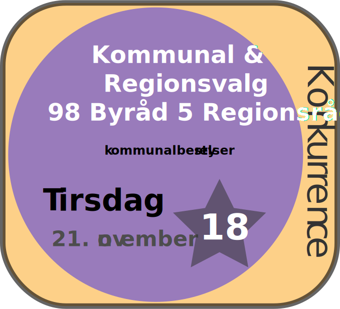

Facebook
Instragram
Twitter
Kommunal og regionsvalget 21. nov 2017 -Find call to action!- Kommunal konkurrencen
FORSIDE
valgvideo
PARTIINFO
VALGINFO
SPIL
KONTAKT

Din stemme har betydning
Brug din stemmeret
Unge og ældre området
Et valg tæt på dit valg
#fordig
www.alternativet.dk/ (21.05.17) "Mod Generøsitet Gennemsigtighed Ydmyghed Humor Empati."
www.danskfolkeparti.dk/ (21.05.17) "På kommunalt basis skal vi være med til at bibeholde de over 60 årige i et aktivt liv med plads til individualisme."
www.enhedslisten.dk (21.05.17) "omkring os ændrer sig hele tiden. Som parti får vi nye erfaringer. Gennem diskussioner bliver vi klogere."
www.guldborgsundlisten.dk/ (21.05.17) "Det gode liv i Guldborgsund krydret med alle de gode historier kan være med til at skabe endnu mere vækst og udvikling i vores kommune. "
www.konservative.dk (21.05.17) "Familien er grundlaget for et velfungerende samfund."
www.kd.dk (21.05.17) "Kristendemokraterne er et politisk parti, der ønsker at præge samfundet ud fra det kristne livs- og menneskesyn."
www.liberalalliance.dk (21.05.17) "Liberal Alliance tror på dig Liberal Alliance sætter din frihed i højsædet."
www.sf.dk (21.05.17) "Socialistisk Folkeparti. Kontrol og minuttyranni har taget overhånd i den offentlige sektor."
www.radikale.dk (21.05.17) "Det Radikale Venstre tror på det frie og ansvarlige menneske, der virker i samhørighed med andre mennesker."
www.slesvigsk-parti.dk (21.05.17) "SP er det eneste regionale parti i Sønderjylland. Vi fokuserer fuldt ud på Sønderjylland."
www.socialdemokratiet.dk (21.05.17) "Ved det seneste regions- og kommunalvalg den 19. november 2013 fik Socialdemokratiet 29,5 procent af stemmerne, hvilket igen gør S til Danmarks største kommunale parti."
www.venstre.dk (21.05.17) "DET LIBERALE MENNESKESYN RETTEN TIL EGET LIVET LEVENDE FOLKESTYRE DET DANSKE FÆLLESSKAB KULTUR GIVER FÆLLESSKAB FOLKEKIRKE OG ELIGION."